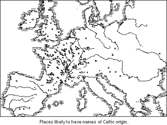
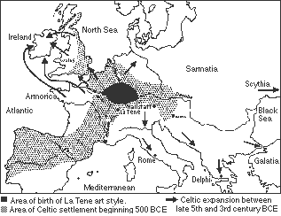
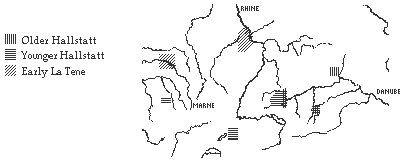
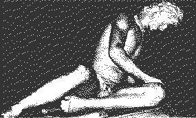
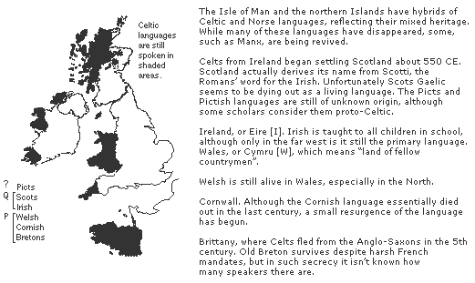

It is not easy to characterise any large group of people, let alone one which occupied vast regions of Europe over thousands of years. Since the Celtic culture was primarily oral, they left very little writing, and we have only sparse information about them. What we do have — beautiful works of art, magnificent tales of wonder, ancient traditions and strange accounts from other people who understood very little of the Celts — is the subject of many heatedly disputed interpretations.
The museum will attempt, as much as possible, to present the materials objectively, and provide the most characteristic lines of reasoning and interpretation about them.
Although we now think of the Celts as living in Ireland, Brittany and the United Kingdom, they occupied most of Europe at one time or another.
They interacted with many other cultures, exchanging ideas and goods, intermingling and intermarrying, conquering and being conquered. The other cultures included Romans, Picts, Scythians, Iberians, Germanics and many others.
There was little national unity among the Celts, since the basic political unit was the tribe. As a result, there are many regional variations of customs, traditions, styles and myths, making a definitive description of the Celts as a whole almost impossible.

There are many different theories about the origins of the Celts. The Celts are regarded as being a branch of the Indo-European family, a linguistic group from which sprang many languages — Celtic, Germanic, Romance, Indian, Slavic. As tribes of Indo-Europeans migrated and separated, their distinct languages evolved. Today, all of the European languages except Basque and Finnish have Indo- European roots.
The traditional view of the Celtic migrations is related to the explanation of the "Indo-European" expansion, with waves of migrations and conquests of land. This older stance claims that the early Celts held a large region in southern Germany, shown in black on the map. This early culture is known as the Hallstatt culture, and dates to about the seventh century BCE.
The La Téne culture followed in the fifth century BCE, when the tribes began to migrate in all directions. This explanation is supported largely by patterns of artifacts with distinctive art styles and common construction techniques, as well as by linguistic affinities.

Many scholars have recently questioned traditional assumptions and reconstructive techniques, however, and many believe that the Celts go back much further than previously thought. A proto-Celtic culture, for example, is believed to date to at least 1,500 BCE in Ireland and Britain. [4]
This new outlook questions the strong correspondence previously assumed between culture and material artifacts. For example, a new pottery style does not necessarily indicate that a new culture migrated to the area. The indigenous people may have developed a new technique on their own, or may have adopted a style from a neighbouring group. Likewise, similar pottery found over a widespread geographical area may indicate trade rather than conquest.
The "migrational" assumption of the traditional view has also come under strong attack. It ignores questions of why and how such migrations may have occurred. Other methods of population spread are now being considered, such as the slow but steady spread of agriculture, and peaceable integration of newcomers into a native population.
While this may not sound as romantic as the hordes of conquering barbarians suggested by earlier theories, this new "processual approach" attempts to rationally explain the complex interactions and developments between and within cultures.
The Hallstatt Celts are believed to have been the pioneers in the creation, crafting and use of iron: they essentially spearheaded Europe's first industrial revolution by opening the Iron Age. The location of this culture amidst Europe's major rivers was vital; the waterways provided a means to export products and import raw materials.
The Celts have been credited with the creation of many important objects which have changed little since their conception: chain armour, the handsaw, the chisel, the file, and many other tools still in use.

The La Téne culture of the fifth century BCE is regarded by many scholars as the first truly Celtic culture, and it is these people that are first referred to by the classical historians of Greece and Rome. The Greeks and Romans understood little about the Celts. The Romans exaggerated the Celts' alien customs as propaganda to justify their conquest of the Celtic people and lands. [31]

As a people, the Celts are loosely united by language, art and religious beliefs. There are several groups of Celtic peoples that survived into recent or modern times with enough heritage intact to make them an integral part of any Celtic study.
The Celts are usually divided along a linguistic boundary into two groups, the P-Celts (or Brythonic) and the Q-Celts (or Gaelic). This is because many words in some languages have the letter "p" where the other languages have "q," or a hard "c" sound.
For example:
| English | Old Irish | Welsh |
|---|---|---|
| five | coic | pump |
| son | mac | map |
| buy | crenaim | prynu |

The strong identity of Celtic music, art and mythology attests to the on-going vitality of the Celtic tradition. No one can mistake the merry sound of an Irish jig, the labyrinthine maze of Celtic knotwork or the heroic tales of Arthur or Cuchulainn as being anything but distinctively Celtic.
It is time that western Europe acknowledges that it has a heritage of its own, rather than looking to the Classical world for a sense of early culture. In many respects, the Celtic culture rivalled that of the Classical world and did not deserve the "barbarian" label given to it by the Mediterranean peoples who did not understand the Celts. We cannot meaningfully consider the Celts, Norse or any other European people by simply comparing them to the Classical values still dominant in our society today. To do so would inflict an unjust negative bias.